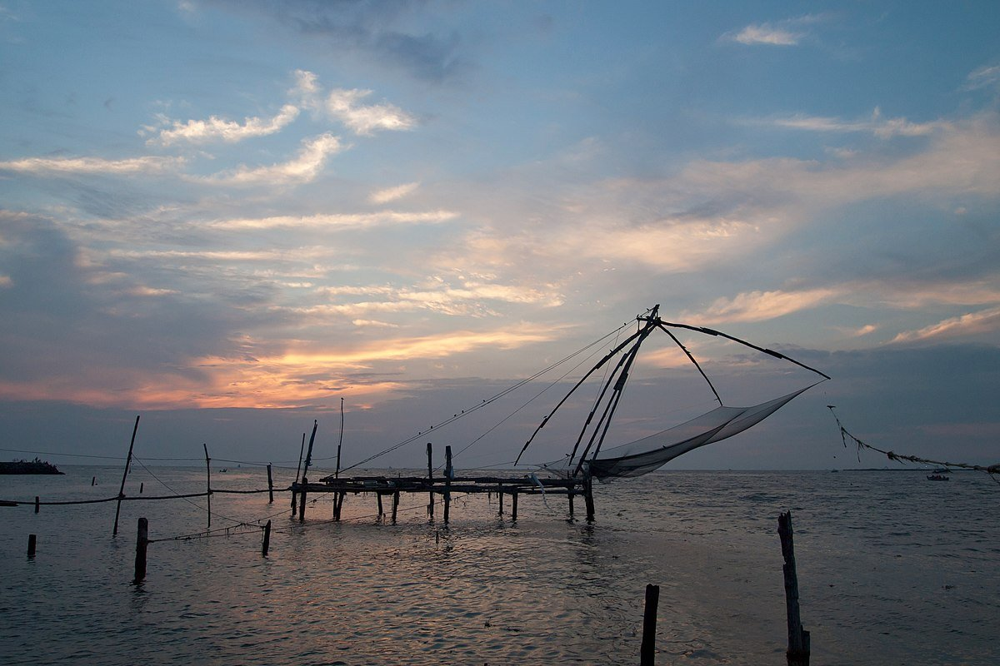

Fort Kochi waterfront
Walk along the shore to see the Chinese fishing nets and watch the harbour change through the day.

KERALA FIELD NOTES · 01 / 06
Where the sea carries stories.
PORT CITY & LIVING HISTORYCOCHIN
Chinese fishing nets, old trading streets and a waterfront shaped by centuries of exchange.
Along the Fort Kochi waterfront, fishing nets rise against the sky. In Mattancherry, narrow streets lead past spice warehouses, tiled roofs and historic buildings. The city’s character shifts between quiet heritage quarters and a busy modern harbour.

THE STORIES BENEATH THE SCENERY
Kochi grew into an important Indian Ocean trading port during the medieval period. Its trade connected Kerala with merchants from Arabia, China and beyond. Portuguese, Dutch and later British influence left traces in the city’s architecture, while long-established local communities shaped its food, faith and everyday life.
More background on Kochi →LOOK A LITTLE CLOSER
Walk along the shore to see the Chinese fishing nets and watch the harbour change through the day.
Explore a neighbourhood known for spice trading, historic lanes and the Paradesi Synagogue. Check visiting hours and local customs.
Discover the former royal palace, known for its Kerala murals and its connections to the Kochi royal family.
A FEW FRAMES FROM KOCHI
BEFORE YOU GO
November to February is usually more comfortable for walking. The monsoon brings heavy showers and a different waterfront atmosphere.
Make time for a waterfront walk early or late in the day, and ask before photographing people at work.
CURIOUS ABOUT KOCHI?
Ask your local guide about the places that interest you.
Contact your guide →THERE’S MORE TO DISCOVER

A lakeside landscape of coconut palms, village waterways and birdlife around Vembanad.
Discover Kumarakom
Palm-lined canals, traditional houseboats and everyday life woven around the backwaters.
Discover Alleppey
Tea-covered hills, winding roads and cool mountain landscapes in the Western Ghats.
Discover Munnar